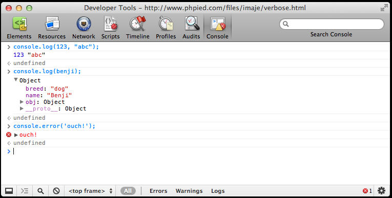
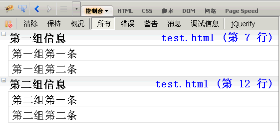
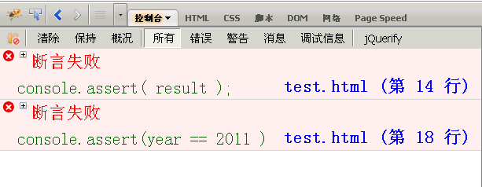
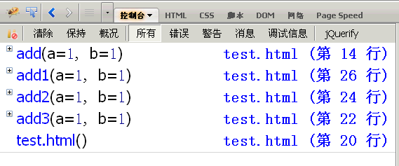
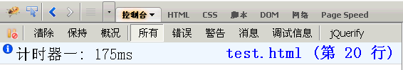
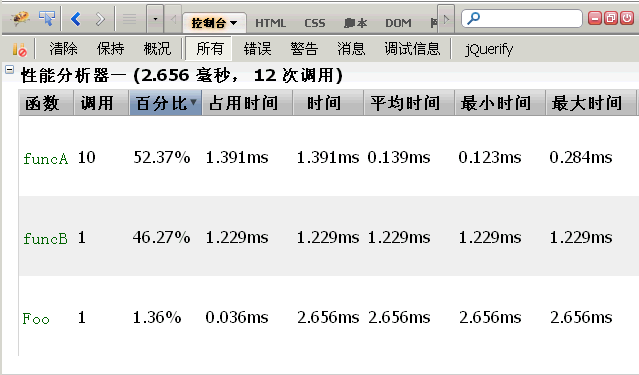

JavaScript Webkit console 使用
- 参考
WebKit console 提供了 console 对象来向 console 输出内容。
console.log() , error(), debug(), warn()
- console.log()
- 输出日志
- console.error()
- 输出错误日志，红色高亮。

占位符
console对象的上面5种方法，都可以使用printf风格的占位符。不过，占位符的种类比较少，只支持字符（%s）、整数（%d或%i）、浮点数（%f）和对象（%o）四种。
1 2 | console.log("%d年%d月%d日",2011,3,26); console.log("圆周率是%f",3.1415926); |
%o 占位符，可以用来查看一个对象内部情况。比如，有这样一个对象：
1 2 3 4 5 | var dog = {} ; dog.name = "大毛" ; dog.color = "黄色"; console.log("%o",dog); |
分组显示， console.group() 和 console.groupEnd()
如果信息太多，可以分组显示，用到的方法是console.group()和console.groupEnd()。
1 2 3 4 5 6 7 8 9 | console.group("第一组信息"); console.log("第一组第一条"); console.log("第一组第二条"); console.groupEnd(); console.group("第二组信息"); console.log("第二组第一条"); console.log("第二组第二条"); console.groupEnd(); |

console.dir()
console.dir() 可以显示一个对象所有的属性和方法。
1 2 | // 例如，查看document对象的属性和方法 console.dir(document) |
console.dirxml()
console.dirxml() 用来显示网页的某个节点（node）所包含的html/xml 文档内容。
1 2 | var table = document.getElementById("table1"); console.dirxml(table); |
console.assert()
console.assert() 用来判断一个表达式或变量是否为真。
如果结果为否，则在控制台输出一条相应信息，并且抛出一个异常。
1 2 3 4 | var result = 0; console.assert( result ); var year = 2000; console.assert(year == 2011 ); |

console.trace()
console.trace() 用来追踪函数的调用轨迹。
1 2 3 4 5 6 7 8 9 | function add(a,b) { console.trace(); return a+b; } var x = add3(1,1); function add3(a,b){return add2(a,b);} function add2(a,b){return add1(a,b);} function add1(a,b){return add(a,b);} |
运行后，会显示add()的调用轨迹，从上到下依次为add()、add1()、add2()、add3()。

计时功能 console.time() 和 console.timeEnd()
console.time() 和 console.timeEnd() ，用来显示代码的运行时间。
1 2 3 4 5 | console.time("计时器一"); for(var i=0;i<1000;i++){ for(var j=0;j<1000;j++){} } console.timeEnd("计时器一"); |

性能分析 console.profile()
性能分析（Profiler）就是分析程序各个部分的运行时间，找出瓶颈所在，使用的方法是console.profile()。
假定有一个函数Foo()，里面调用了另外两个函数funcA()和funcB()，其中funcA()调用10次，funcB()调用1次。
1 2 3 4 5 6 7 8 9 10 | function Foo(){ for(var i=0;i<10;i++) { funcA(1000); } funcB(10000); } function funcA(count){ for(var i=0;i<count;i++){} } function funcB(count){ for(var i=0;i<count;i++){} } |
然后，就可以分析Foo()的运行性能了。
1 2 3 | console.profile('性能分析器一'); Foo(); console.profileEnd(); |
控制台会显示一张性能分析表，如下图。

除了使用console.profile()方法，firebug还提供了一个”概况”（Profiler）按钮。第一次点击该按钮，”性能分析”开始，你可以对网页进行某种操作（比如ajax操作），然后第二次点击该按钮，”性能分析”结束，该操作引发的所有运算就会进行性能分析。